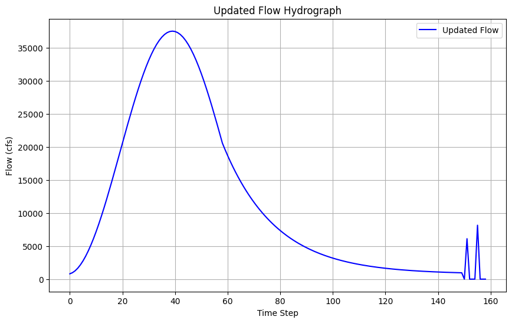
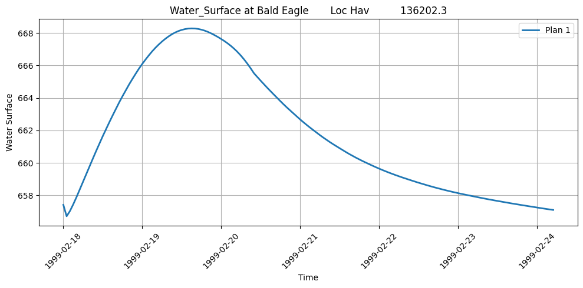
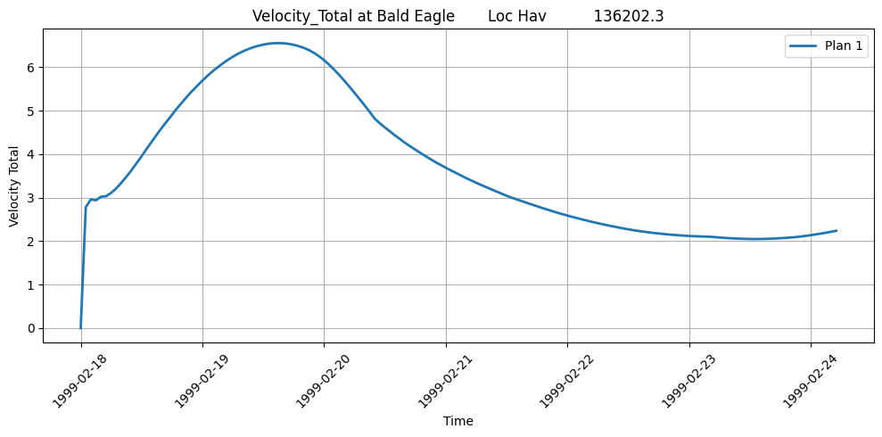
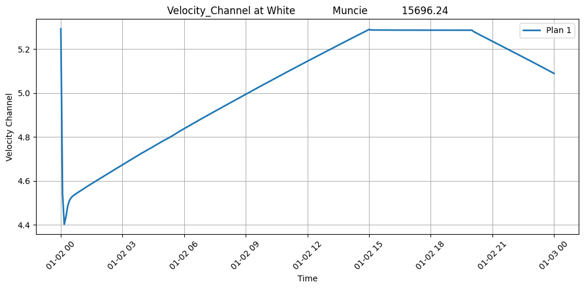
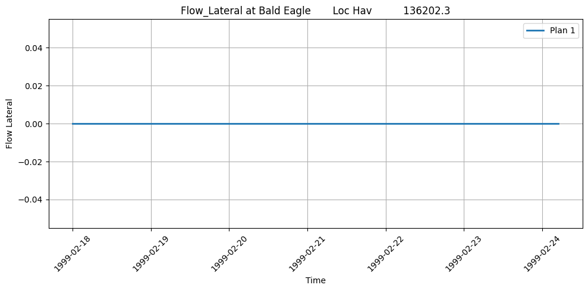
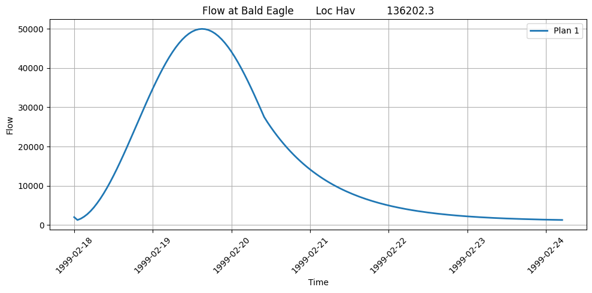
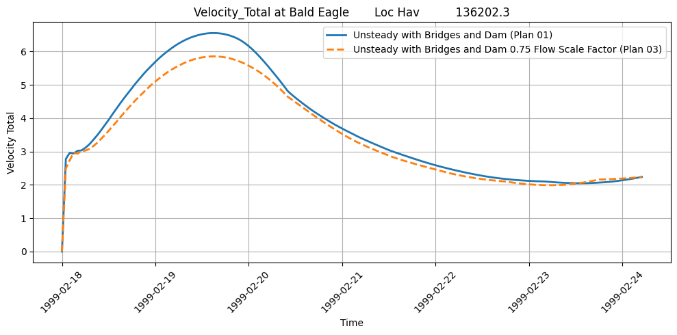
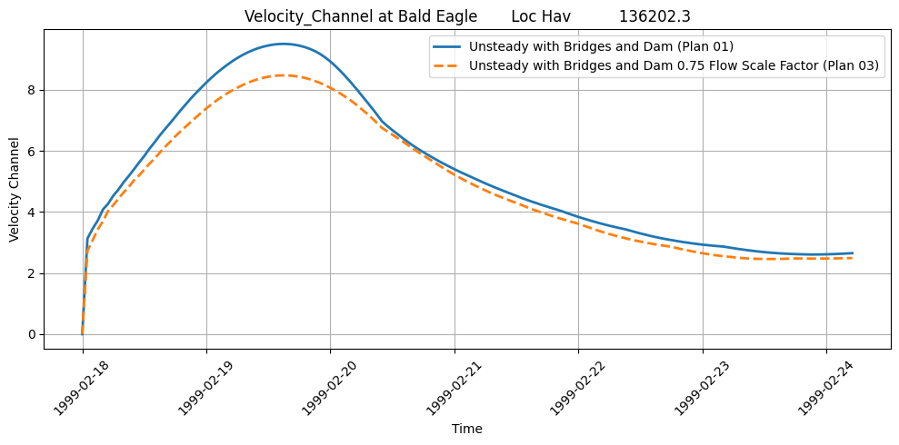
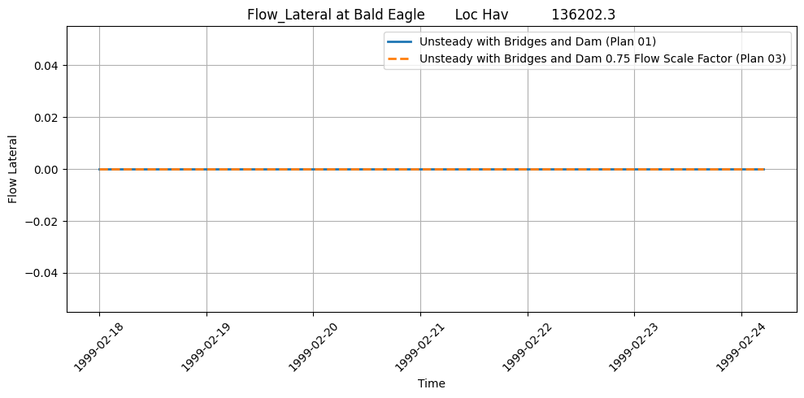
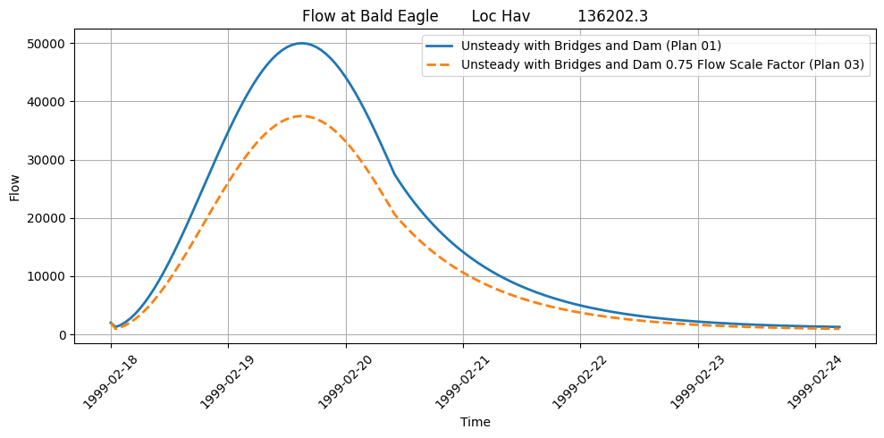

Unsteady Flow Operations¶
Overview¶
This notebook demonstrates reading and manipulating unsteady flow files (.u## format). These define time-varying boundary conditions and simulation parameters.
What You'll Learn¶
- Parse unsteady flow file structure
- Extract boundary condition time series
- Modify initial condition lines
- Update simulation parameters
LLM Forward Approach¶
- Verification: Compare to HEC-RAS GUI
- Audit Trail: Save modified flow files
- Reproducibility: Document parameter changes
Reference Documentation¶
# =============================================================================
# DEVELOPMENT MODE TOGGLE
# =============================================================================
USE_LOCAL_SOURCE = False # <-- TOGGLE THIS
if USE_LOCAL_SOURCE:
import sys
from pathlib import Path
local_path = str(Path.cwd().parent)
if local_path not in sys.path:
sys.path.insert(0, local_path)
print(f"📁 LOCAL SOURCE MODE: Loading from {local_path}/ras_commander")
else:
print("📦 PIP PACKAGE MODE: Loading installed ras-commander")
# Import ras-commander
from ras_commander import HdfResultsXsec, RasCmdr, RasExamples, RasPlan, RasUnsteady, init_ras_project, ras
# Additional imports
import os
import numpy as np
import pandas as pd
from IPython.display import display
import matplotlib.pyplot as plt
# Verify which version loaded
import ras_commander
print(f"✓ Loaded: {ras_commander.__file__}")
# Set to True to generate plots, False to skip plotting
generate_plots = True
📦 PIP PACKAGE MODE: Loading installed ras-commander
✓ Loaded: c:\Users\billk_clb\anaconda3\envs\rascmdr_piptest\Lib\site-packages\ras_commander\__init__.py
Parameters¶
Configure these values to customize the notebook for your project.
# =============================================================================
# PARAMETERS - Edit these to customize the notebook
# =============================================================================
from pathlib import Path
# Project Configuration
PROJECT_NAME = "Muncie" # Example project to extract
RAS_VERSION = "6.6" # HEC-RAS version (6.3, 6.5, 6.6, etc.)
# Output Configuration
OUTPUTS_DIR = Path("_outputs") / "300_unsteady_flow_operations" # Artifacts saved here
# Execution Settings
PLAN = "01" # Plan number to execute
NUM_CORES = 4 # CPU cores for 2D computation
RUN_SUFFIX = "run" # Suffix for run folder (e.g., Muncie_run)
# Create output directory
OUTPUTS_DIR.mkdir(parents=True, exist_ok=True)
print(f"Outputs will be saved to: {OUTPUTS_DIR.absolute()}")
import os
import sys
from pathlib import Path
import numpy as np
import pandas as pd
from IPython.display import display
import matplotlib.pyplot as plt
# Set to True to generate plots, False to skip plotting
generate_plots = True
Understanding Unsteady Flow Files in HEC-RAS¶
Unsteady flow files (.u* files) in HEC-RAS define the time-varying boundary conditions that drive dynamic simulations. These include:
- Flow Hydrographs: Time-series of flow values at model boundaries
- Stage Hydrographs: Time-series of water surface elevations
- Lateral Inflows: Distributed inflows along a reach
- Gate Operations: Time-series of gate settings
- Meteorological Data: Rainfall, evaporation, and other meteorological inputs
The RasUnsteady class in RAS Commander provides methods for working with these files, including extracting boundaries, reading tables, and modifying parameters.
Let's set up our working directory and define paths to example projects:
Downloading and Extracting Example HEC-RAS Projects¶
We'll use the RasExamples class to download and extract an example HEC-RAS project with unsteady flow files. For this notebook, we'll use the "Balde Eagle Creek" project.
# Extract the Bald Eagle Creek example project
# The extract_project method downloads the project from GitHub if not already present,
# and extracts it to the example_projects folder
bald_eagle_path = RasExamples.extract_project(PROJECT_NAME, suffix="300")
print(f"Extracted project to: {bald_eagle_path}")
# Verify the path exists
print(f"Bald Eagle Creek project exists: {bald_eagle_path.exists()}")
2025-12-15 12:24:28 - ras_commander.RasExamples - INFO - Found zip file: C:\Users\billk_clb\anaconda3\envs\rascmdr_piptest\Lib\site-packages\examples\Example_Projects_6_6.zip
2025-12-15 12:24:28 - ras_commander.RasExamples - INFO - Loading project data from CSV...
2025-12-15 12:24:28 - ras_commander.RasExamples - INFO - Loaded 68 projects from CSV.
2025-12-15 12:24:28 - ras_commander.RasExamples - INFO - ----- RasExamples Extracting Project -----
2025-12-15 12:24:28 - ras_commander.RasExamples - INFO - Extracting project 'Balde Eagle Creek'
2025-12-15 12:24:28 - ras_commander.RasExamples - INFO - Folder 'Balde Eagle Creek' already exists. Deleting existing folder...
2025-12-15 12:24:28 - ras_commander.RasExamples - INFO - Existing folder 'Balde Eagle Creek' has been deleted.
2025-12-15 12:24:28 - ras_commander.RasExamples - INFO - Successfully extracted project 'Balde Eagle Creek' to C:\GH\ras-commander\examples\example_projects_03_unsteady_flow_operations\Balde Eagle Creek
Extracted project to: C:\GH\ras-commander\examples\example_projects_03_unsteady_flow_operations\Balde Eagle Creek
Bald Eagle Creek project exists: True
Step 1: Project Initialization¶
The first step is to initialize the HEC-RAS project. This is done using the init_ras_project() function, which takes the following parameters:
ras_project_folder: Path to the HEC-RAS project folder (required)ras_version: HEC-RAS version (e.g., "6.6") or path to Ras.exe (required first time)
This function initializes the global ras object that we'll use for the rest of the notebook.
# Initialize the HEC-RAS project
# This function returns a RAS object, but also updates the global 'ras' object
# Parameters:
# - ras_project_folder: Path to the HEC-RAS project folder
# - ras_version: HEC-RAS version or path to Ras.exe
init_ras_project(bald_eagle_path, RAS_VERSION)
print(f"Initialized HEC-RAS project: {ras.project_name}")
# Display the unsteady flow files in the project
2025-12-15 12:24:28 - ras_commander.RasMap - INFO - Successfully parsed RASMapper file: C:\GH\ras-commander\examples\example_projects_03_unsteady_flow_operations\Balde Eagle Creek\BaldEagle.rasmap
Initialized HEC-RAS project: BaldEagle
HEC-RAS Project Plan Data (plan_df):
| plan_number | unsteady_number | geometry_number | Plan Title | Program Version | Short Identifier | Simulation Date | Computation Interval | Mapping Interval | Run HTab | ... | PS Cores | DSS File | Friction Slope Method | HDF_Results_Path | Geom File | Geom Path | Flow File | Flow Path | full_path | flow_type | |
|---|---|---|---|---|---|---|---|---|---|---|---|---|---|---|---|---|---|---|---|---|---|
| 0 | 01 | 02 | 01 | Unsteady with Bridges and Dam | 5.00 | UnsteadyFlow | 18FEB1999,0000,24FEB1999,0500 | 2MIN | 1HOUR | 1 | ... | None | dss | 2 | None | 01 | C:\GH\ras-commander\examples\example_projects_... | 02 | C:\GH\ras-commander\examples\example_projects_... | C:\GH\ras-commander\examples\example_projects_... | Unsteady |
| 1 | 02 | None | 01 | Steady Flow Run | NaN | SteadyRun | 02/18/1999,0000,02/24/1999,0500 | 2MIN | NaN | 1 | ... | None | dss | 1 | None | 01 | C:\GH\ras-commander\examples\example_projects_... | 02 | C:\GH\ras-commander\examples\example_projects_... | C:\GH\ras-commander\examples\example_projects_... | Steady |
2 rows × 27 columns
HEC-RAS Project Geometry Data (geom_df):
| geom_file | geom_number | full_path | hdf_path | |
|---|---|---|---|---|
| 0 | g01 | 01 | C:\GH\ras-commander\examples\example_projects_... | C:\GH\ras-commander\examples\example_projects_... |
HEC-RAS Project Unsteady Flow Data (unsteady_df):
| unsteady_number | full_path | Flow Title | Program Version | Use Restart | Precipitation Mode | Wind Mode | Met BC=Precipitation|Mode | Met BC=Evapotranspiration|Mode | Met BC=Precipitation|Expanded View | Met BC=Precipitation|Constant Units | Met BC=Precipitation|Gridded Source | |
|---|---|---|---|---|---|---|---|---|---|---|---|---|
| 0 | 02 | C:\GH\ras-commander\examples\example_projects_... | Flow Hydrograph 2 | 6.30 | 0 | Disable | No Wind Forces | None | None | 0 | mm/hr | DSS |
print("\nHEC-RAS Project Boundary Data (boundaries_df):")
print("Columns:", list(ras.boundaries_df.columns))
ras.boundaries_df
HEC-RAS Project Boundary Data (boundaries_df):
Columns: ['unsteady_number', 'boundary_condition_number', 'river_reach_name', 'river_station', 'storage_area_name', 'pump_station_name', 'bc_type', 'hydrograph_type', 'Interval', 'DSS Path', 'Use DSS', 'Use Fixed Start Time', 'Fixed Start Date/Time', 'Is Critical Boundary', 'Critical Boundary Flow', 'hydrograph_num_values', 'hydrograph_values', 'full_path', 'Flow Title', 'Program Version', 'Use Restart', 'Precipitation Mode', 'Wind Mode', 'Met BC=Precipitation|Mode', 'Met BC=Evapotranspiration|Mode', 'Met BC=Precipitation|Expanded View', 'Met BC=Precipitation|Constant Units', 'Met BC=Precipitation|Gridded Source']
| unsteady_number | boundary_condition_number | river_reach_name | river_station | storage_area_name | pump_station_name | bc_type | hydrograph_type | Interval | DSS Path | ... | Flow Title | Program Version | Use Restart | Precipitation Mode | Wind Mode | Met BC=Precipitation|Mode | Met BC=Evapotranspiration|Mode | Met BC=Precipitation|Expanded View | Met BC=Precipitation|Constant Units | Met BC=Precipitation|Gridded Source | |
|---|---|---|---|---|---|---|---|---|---|---|---|---|---|---|---|---|---|---|---|---|---|
| 0 | 02 | 1 | Bald Eagle | Loc Hav | 138154.4 | Flow Hydrograph | Flow Hydrograph | 1HOUR | ... | Flow Hydrograph 2 | 6.30 | 0 | Disable | No Wind Forces | None | None | 0 | mm/hr | DSS | ||
| 1 | 02 | 2 | Bald Eagle | Loc Hav | 81500 | Gate Opening | None | NaN | NaN | ... | Flow Hydrograph 2 | 6.30 | 0 | Disable | No Wind Forces | None | None | 0 | mm/hr | DSS | |
| 2 | 02 | 3 | Bald Eagle | Loc Hav | 659.942 | Rating Curve | None | NaN | ... | Flow Hydrograph 2 | 6.30 | 0 | Disable | No Wind Forces | None | None | 0 | mm/hr | DSS |
3 rows × 28 columns
Understanding the RasUnsteady Class¶
The RasUnsteady class provides functionality for working with HEC-RAS unsteady flow files (.u* files). Key operations include:
- Extracting Boundary Conditions: Read and parse boundary conditions from unsteady flow files
- Modifying Flow Titles: Update descriptive titles for unsteady flow scenarios
- Managing Restart Settings: Configure restart file options for continuing simulations
- Working with Tables: Extract, modify, and update flow tables
Most methods in this class are static and work with the global ras object by default, though you can also pass in a custom RAS object.
Step 2: Extract Boundary Conditions and Tables¶
The extract_boundary_and_tables() method from the RasUnsteady class allows us to extract boundary conditions and their associated tables from an unsteady flow file.
Parameters for RasUnsteady.extract_boundary_and_tables():
- unsteady_file (str): Path to the unsteady flow file
- ras_object (optional): Custom RAS object to use instead of the global one
Returns:
- pd.DataFrame: DataFrame containing boundary conditions and their associated tables
Let's see how this works with our example project:
# Get the path to unsteady flow file "02"
unsteady_file = RasPlan.get_unsteady_path("02")
print(f"Unsteady flow file path: {unsteady_file}")
# Extract boundary conditions and tables
boundaries_df = RasUnsteady.extract_boundary_and_tables(unsteady_file)
print(f"Extracted {len(boundaries_df)} boundary conditions from the unsteady flow file.")
2025-12-15 12:24:28 - ras_commander.RasUnsteady - INFO - Successfully extracted boundaries and tables from C:\GH\ras-commander\examples\example_projects_03_unsteady_flow_operations\Balde Eagle Creek\BaldEagle.u02
Unsteady flow file path: C:\GH\ras-commander\examples\example_projects_03_unsteady_flow_operations\Balde Eagle Creek\BaldEagle.u02
Extracted 3 boundary conditions from the unsteady flow file.
Step 3: Print Boundaries and Tables¶
The print_boundaries_and_tables() method provides a formatted display of the boundary conditions and their associated tables. This method doesn't return anything; it just prints the information in a readable format.
Parameters for RasUnsteady.print_boundaries_and_tables():
- boundaries_df (pd.DataFrame): DataFrame containing boundary conditions from extract_boundary_and_tables()
Let's use this method to get a better understanding of our boundary conditions:
# Print the boundaries and tables in a formatted way
print("Detailed boundary conditions and tables:")
RasUnsteady.print_boundaries_and_tables(boundaries_df)
Detailed boundary conditions and tables:
Boundaries and Tablesin boundaries_df:
Boundary 1:
River Name: Bald Eagle
Reach Name: Loc Hav
River Station: 138154.4
DSS File:
Tables for this boundary:
Flow Hydrograph:
Value
0 1075.530
1 1301.640
2 1676.940
3 2199.120
4 2864.950
5 3670.340
6 4610.320
7 5679.080
8 6870.050
9 8175.880
10 9588.521
11 1099.261
12 2698.791
13 4377.231
14 6124.261
15 7929.081
16 9780.592
17 1667.362
18 3577.750
19 25500.000
20 27422.250
21 29332.640
22 31219.410
23 33070.920
24 34875.740
25 36622.770
26 38301.210
27 39900.740
28 41411.480
29 42824.120
30 44129.950
31 45320.920
32 46389.680
33 47329.660
34 48135.050
35 48800.880
36 49323.060
37 49698.360
38 49924.480
39 50000.000
40 49924.480
41 49698.360
42 49323.060
43 48800.880
44 48135.050
45 47329.660
46 46389.680
47 45320.920
48 44129.950
49 42824.120
50 41411.480
51 39900.740
52 38301.210
53 36622.770
54 34875.740
55 33070.920
56 31219.410
57 29332.640
58 27422.250
59 26133.620
60 24907.840
61 23741.840
62 22632.710
63 21577.670
64 20574.080
65 19619.450
66 18711.360
67 17847.570
68 17025.900
69 16244.310
70 15500.840
71 14793.620
72 14120.900
73 13480.990
74 12872.280
75 12293.260
76 11742.490
77 11218.570
78 10720.200
79 10246.140
80 9795.200
81 9.000
82 366.260
83 8.000
84 958.230
85 8570.100
86 8200.900
87 7.000
88 849.710
89 7.000
90 515.650
91 7.000
92 197.880
93 6895.600
94 6.000
95 608.070
96 6334.560
97 6074.390
98 5826.910
99 5591.500
100 5367.570
101 5154.560
102 4951.940
103 4759.200
104 4575.860
105 4401.470
106 4235.580
107 4077.770
108 3927.670
109 3784.890
110 3649.070
111 3519.870
112 3396.970
113 3280.070
114 3168.870
115 3063.090
116 2962.480
117 2866.760
118 2775.720
119 2689.120
120 2606.740
121 2528.380
122 2453.840
123 2382.930
124 2315.490
125 2251.330
126 2190.300
127 2.000
128 132.250
129 2.000
130 77.030
131 2024.500
132 1.000
133 974.540
134 1.000
135 927.010
136 1881.800
137 1.000
138 838.790
139 1.000
140 797.880
141 1.000
142 758.970
143 1721.950
144 1686.740
145 1653.250
146 1621.390
147 1591.090
148 1562.260
149 1534.840
150 1508.750
151 1483.940
152 1460.340
153 1437.890
154 1416.530
155 1396.220
156 1376.890
157 1358.510
158 1341.030
159 1324.400
160 1308.570
161 1293.530
162 1279.210
--------------------------------------------------------------------------------
Boundary 2:
River Name: Bald Eagle
Reach Name: Loc Hav
River Station: 81500
DSS File:
Tables for this boundary:
Gate Openings:
Value
0 6.00
1 6.20
2 3.00
3 6.40
4 5.00
5 6.60
6 8.00
7 6.00
8 9.00
9 7.10
10 3.00
11 7.30
12 5.00
13 7.50
14 8.00
15 7.00
16 8.00
17 8.00
18 3.00
19 8.25
20 8.48
21 8.70
22 8.93
23 9.15
24 9.38
25 9.60
26 9.83
27 1.00
28 0.05
29 1.00
30 0.28
31 10.50
32 1.00
33 0.73
34 1.00
35 0.95
36 1.00
37 1.18
38 11.40
39 1.00
40 1.63
41 1.00
42 1.85
43 1.00
44 2.08
45 12.30
46 1.00
47 2.53
48 12.75
49 12.98
50 13.20
51 13.43
52 13.65
53 13.88
54 14.10
55 14.33
56 14.55
57 14.78
58 15.00
59 14.00
60 83.00
61 14.00
62 66.00
63 14.00
64 49.00
65 14.00
66 32.00
67 14.00
68 15.00
69 13.00
70 98.00
71 13.00
72 81.00
73 13.00
74 64.00
75 13.00
76 47.00
77 13.31
78 13.14
79 12.97
80 12.80
81 12.63
82 12.46
83 12.29
84 12.12
85 11.95
86 11.78
87 11.61
88 11.44
89 11.27
90 11.10
91 10.93
92 10.76
93 10.59
94 10.42
95 10.25
96 10.08
97 9.92
98 9.75
99 9.58
100 9.41
101 9.24
102 9.07
103 8.90
104 8.73
105 8.56
106 8.39
107 8.22
108 8.05
109 7.88
110 7.71
111 7.54
112 7.37
113 7.20
114 7.03
115 6.86
116 6.69
117 6.53
118 6.36
119 6.19
120 6.02
121 5.85
122 5.68
123 5.51
124 5.34
125 5.17
126 5.00
127 5.00
128 5.00
129 5.00
130 5.00
131 5.00
132 5.00
133 5.00
134 5.00
135 5.00
136 5.00
137 5.00
138 5.00
139 5.00
140 5.00
141 5.00
142 5.00
143 5.00
144 5.00
145 5.00
146 5.00
147 5.00
148 5.00
149 5.00
150 5.00
151 5.00
152 5.00
153 5.00
154 5.00
155 5.00
156 5.00
157 5.00
158 5.00
159 5.00
160 5.00
161 5.00
162 5.00
163 5.00
164 5.00
165 5.00
166 5.00
167 5.00
168 5.00
169 5.00
170 5.00
171 5.00
172 5.00
173 5.00
174 5.00
175 5.00
176 5.00
--------------------------------------------------------------------------------
Boundary 3:
River Name: Bald Eagle
Reach Name: Loc Hav
River Station: 659.942
DSS File:
Tables for this boundary:
Rating Curve:
Value
0 529.2
1 0.0
2 535.0
3 1000.0
4 540.0
5 3000.0
6 557.3
7 16500.0
8 562.1
9 27000.0
--------------------------------------------------------------------------------
Understanding Boundary Condition Types¶
The output above shows the different types of boundary conditions in our unsteady flow file. Let's understand what each type means:
-
Flow Hydrograph: A time series of flow values (typically in cfs or cms) entering the model at a specific location. These are used at upstream boundaries or internal points where flow enters the system.
-
Stage Hydrograph: A time series of water surface elevations (typically in ft or m) that define the downstream boundary condition.
-
Gate Openings: Time series of gate settings (typically height in ft or m) for hydraulic structures such as spillways, sluice gates, or other control structures.
-
Lateral Inflow Hydrograph: Flow entering the system along a reach, not at a specific point. This can represent tributary inflows, overland flow, or other distributed inputs.
-
Normal Depth: A boundary condition where the water surface slope is assumed to equal the bed slope. This is represented by a friction slope value.
Let's look at a specific boundary condition in more detail:
# Let's examine the first boundary condition in more detail
if not boundaries_df.empty:
first_boundary = boundaries_df.iloc[0]
print(f"Detailed look at boundary condition {1}:")
# Print boundary location components
print(f"\nBoundary Location:")
print(f" River Name: {first_boundary.get('River Name', 'N/A')}")
print(f" Reach Name: {first_boundary.get('Reach Name', 'N/A')}")
print(f" River Station: {first_boundary.get('River Station', 'N/A')}")
print(f" Storage Area Name: {first_boundary.get('Storage Area Name', 'N/A')}")
# Print boundary condition type and other properties
print(f"\nBoundary Properties:")
print(f" Boundary Type: {first_boundary.get('bc_type', 'N/A')}")
print(f" DSS File: {first_boundary.get('DSS File', 'N/A')}")
print(f" Use DSS: {first_boundary.get('Use DSS', 'N/A')}")
# Print table statistics if available
if 'Tables' in first_boundary and isinstance(first_boundary['Tables'], dict):
print(f"\nTable Information:")
for table_name, table_df in first_boundary['Tables'].items():
print(f" {table_name}: {len(table_df)} values")
if not table_df.empty:
print(f" Min Value: {table_df['Value'].min()}")
print(f" Max Value: {table_df['Value'].max()}")
print(f" First 5 Values: {table_df['Value'].head(5).tolist()}")
else:
print("No boundary conditions found in the unsteady flow file.")
Detailed look at boundary condition 1:
Boundary Location:
River Name: Bald Eagle
Reach Name: Loc Hav
River Station: 138154.4
Storage Area Name:
Boundary Properties:
Boundary Type: N/A
DSS File:
Use DSS: N/A
Table Information:
Flow Hydrograph: 163 values
Min Value: 1.0
Max Value: 50000.0
First 5 Values: [1075.53, 1301.64, 1676.94, 2199.12, 2864.95]
Step 4: Update Flow Title¶
The flow title in an unsteady flow file provides a description of the simulation scenario. The update_flow_title() method allows us to modify this title.
Parameters for RasUnsteady.update_flow_title():
- unsteady_file (str): Full path to the unsteady flow file
- new_title (str): New flow title (max 24 characters)
- ras_object (optional): Custom RAS object to use instead of the global one
Let's clone an unsteady flow file and update its title:
# Clone unsteady flow "02" to create a new unsteady flow file
new_unsteady_number = RasPlan.clone_unsteady("02")
print(f"New unsteady flow created: {new_unsteady_number}")
2025-12-15 12:24:28 - ras_commander.RasUtils - INFO - File cloned from C:\GH\ras-commander\examples\example_projects_03_unsteady_flow_operations\Balde Eagle Creek\BaldEagle.u02 to C:\GH\ras-commander\examples\example_projects_03_unsteady_flow_operations\Balde Eagle Creek\BaldEagle.u01
2025-12-15 12:24:28 - ras_commander.RasUtils - INFO - Successfully updated file: C:\GH\ras-commander\examples\example_projects_03_unsteady_flow_operations\Balde Eagle Creek\BaldEagle.u01
2025-12-15 12:24:28 - ras_commander.RasUtils - INFO - Project file updated with new Unsteady entry: 01
2025-12-15 12:24:28 - ras_commander.RasMap - INFO - Successfully parsed RASMapper file: C:\GH\ras-commander\examples\example_projects_03_unsteady_flow_operations\Balde Eagle Creek\BaldEagle.rasmap
New unsteady flow created: 01
'01'
# Get the path to the new unsteady flow file
new_unsteady_file = RasPlan.get_unsteady_path(new_unsteady_number)
print(f"New unsteady flow file path: {new_unsteady_file}")
New unsteady flow file path: C:\GH\ras-commander\examples\example_projects_03_unsteady_flow_operations\Balde Eagle Creek\BaldEagle.u01
'C:\\GH\\ras-commander\\examples\\example_projects_03_unsteady_flow_operations\\Balde Eagle Creek\\BaldEagle.u01'
# Get the current flow title
current_title = None
for _, row in ras.unsteady_df.iterrows():
if row['unsteady_number'] == new_unsteady_number and 'Flow Title' in row:
current_title = row['Flow Title']
break
print(f"Current flow title: {current_title}")
# Update the flow title
new_title = "Modified Flow Scenario"
RasUnsteady.update_flow_title(new_unsteady_file, new_title)
print(f"Updated flow title to: {new_title}")
# Refresh unsteady flow information to see the change
2025-12-15 12:24:28 - ras_commander.RasUnsteady - INFO - Updated Flow Title from 'Flow Hydrograph 2' to 'Modified Flow Scenario'
2025-12-15 12:24:28 - ras_commander.RasUnsteady - INFO - Applied Flow Title modification to C:\GH\ras-commander\examples\example_projects_03_unsteady_flow_operations\Balde Eagle Creek\BaldEagle.u01
Current flow title: Flow Hydrograph 2
Updated flow title to: Modified Flow Scenario
| unsteady_number | full_path | Flow Title | Program Version | Use Restart | Precipitation Mode | Wind Mode | Met BC=Precipitation|Mode | Met BC=Evapotranspiration|Mode | Met BC=Precipitation|Expanded View | Met BC=Precipitation|Constant Units | Met BC=Precipitation|Gridded Source | |
|---|---|---|---|---|---|---|---|---|---|---|---|---|
| 0 | 02 | C:\GH\ras-commander\examples\example_projects_... | Flow Hydrograph 2 | 6.30 | 0 | Disable | No Wind Forces | None | None | 0 | mm/hr | DSS |
| 1 | 01 | C:\GH\ras-commander\examples\example_projects_... | Modified Flow Scenario | 6.30 | 0 | Disable | No Wind Forces | None | None | 0 | mm/hr | DSS |
Step 6: Working with Flow Tables¶
Flow tables in unsteady flow files contain the time-series data for boundary conditions. Let's explore how to extract and work with these tables using some of the advanced methods from the RasUnsteady class.
# Extract specific tables from the unsteady flow file
all_tables = RasUnsteady.extract_tables(new_unsteady_file)
print(f"Extracted {len(all_tables)} tables from the unsteady flow file.")
# Let's look at the available table names
print("\nAvailable tables:")
for table_name in all_tables.keys():
print(f" {table_name}")
# Select the first table for detailed analysis
if all_tables and len(all_tables) > 0:
first_table_name = list(all_tables.keys())[0]
first_table = all_tables[first_table_name]
print(f"\nDetailed look at table '{first_table_name}':")
print(f" Number of values: {len(first_table)}")
print(f" Min value: {first_table['Value'].min()}")
print(f" Max value: {first_table['Value'].max()}")
print(f" Mean value: {first_table['Value'].mean():.2f}")
print(f" First 10 values: {first_table['Value'].head(10).tolist()}")
# Create a visualization of the table values
try:
import matplotlib.pyplot as plt
plt.figure(figsize=(10, 6))
plt.plot(first_table['Value'].values)
plt.title(f"{first_table_name} Values")
plt.xlabel('Time Step')
plt.ylabel('Value')
plt.grid(True)
plt.show()
except Exception as e:
print(f"Could not create visualization: {e}")
else:
print("No tables found in the unsteady flow file.")
Extracted 3 tables from the unsteady flow file.
Available tables:
Flow Hydrograph=
Gate Openings=
Rating Curve=
Detailed look at table 'Flow Hydrograph=':
Number of values: 155
Min value: 0.0
Max value: 50000.0
Mean value: 15726.35
First 10 values: [1075.53, 1301.64, 1676.94, 2199.12, 2864.95, 3670.34, 4610.32, 5679.08, 6870.05, 8175.88]

Step 7: Modifying Flow Tables¶
Now let's demonstrate how to modify a flow table and write it back to the unsteady flow file. For this example, we'll scale all the values in a table by a factor.
Scaling existing values down by a 0.75 scale factor¶
# First, identify tables in the unsteady flow file
tables = RasUnsteady.identify_tables(open(new_unsteady_file, 'r').readlines())
print(f"Identified {len(tables)} tables in the unsteady flow file.")
# Let's look at the first flow hydrograph table
flow_hydrograph_tables = [t for t in tables if t[0] == 'Flow Hydrograph=']
if flow_hydrograph_tables:
table_name, start_line, end_line = flow_hydrograph_tables[0]
print(f"\nSelected table: {table_name}")
print(f" Start line: {start_line}")
print(f" End line: {end_line}")
# Parse the table
lines = open(new_unsteady_file, 'r').readlines()
table_df = RasUnsteady.parse_fixed_width_table(lines, start_line, end_line)
print(f"\nOriginal table statistics:")
print(f" Number of values: {len(table_df)}")
print(f" Min value: {table_df['Value'].min()}")
print(f" Max value: {table_df['Value'].max()}")
print(f" First 5 values: {table_df['Value'].head(5).tolist()}")
# Modify the table - let's scale all values by 75%
scale_factor = 0.75
table_df['Value'] = table_df['Value'] * scale_factor
print(f"\nModified table statistics (scaled by {scale_factor}):")
print(f" Number of values: {len(table_df)}")
print(f" Min value: {table_df['Value'].min()}")
print(f" Max value: {table_df['Value'].max()}")
print(f" First 5 values: {table_df['Value'].head(5).tolist()}")
# Write the modified table back to the file
RasUnsteady.write_table_to_file(new_unsteady_file, table_name, table_df, start_line)
print(f"\nUpdated table written back to the unsteady flow file.")
# Re-read the table to verify changes
lines = open(new_unsteady_file, 'r').readlines()
updated_table_df = RasUnsteady.parse_fixed_width_table(lines, start_line, end_line)
print(f"\nVerified updated table statistics:")
print(f" Number of values: {len(updated_table_df)}")
print(f" Min value: {updated_table_df['Value'].min()}")
print(f" Max value: {updated_table_df['Value'].max()}")
print(f" First 5 values: {updated_table_df['Value'].head(5).tolist()}")
else:
print("No flow hydrograph tables found in the unsteady flow file.")
2025-12-15 12:24:29 - ras_commander.RasUnsteady - INFO - Successfully updated table 'Flow Hydrograph=' in C:\GH\ras-commander\examples\example_projects_03_unsteady_flow_operations\Balde Eagle Creek\BaldEagle.u01
Identified 3 tables in the unsteady flow file.
Selected table: Flow Hydrograph=
Start line: 7
End line: 35
Original table statistics:
Number of values: 155
Min value: 0.0
Max value: 50000.0
First 5 values: [1075.53, 1301.64, 1676.94, 2199.12, 2864.95]
Modified table statistics (scaled by 0.75):
Number of values: 155
Min value: 0.0
Max value: 37500.0
First 5 values: [806.6475, 976.23, 1257.705, 1649.34, 2148.7124999999996]
Updated table written back to the unsteady flow file.
Verified updated table statistics:
Number of values: 159
Min value: 0.0
Max value: 37500.0
First 5 values: [806.65, 976.23, 1257.7, 1649.34, 2148.71]
# Extract specific tables from the unsteady flow file
all_tables = RasUnsteady.extract_tables(new_unsteady_file)
# Get the updated flow hydrograph table
flow_hydrograph_tables = [t for t in all_tables.keys() if 'Flow Hydrograph=' in t]
if flow_hydrograph_tables:
table_name = flow_hydrograph_tables[0]
table_df = all_tables[table_name]
# Create visualization of the updated flow values
import matplotlib.pyplot as plt
plt.figure(figsize=(10, 6))
plt.plot(table_df['Value'].values, 'b-', label='Updated Flow')
plt.title('Updated Flow Hydrograph')
plt.xlabel('Time Step')
plt.ylabel('Flow (cfs)')
plt.grid(True)
plt.legend()
plt.show()
# Print summary statistics
print(f"\nUpdated flow hydrograph statistics:")
print(f" Number of values: {len(table_df)}")
print(f" Min flow: {table_df['Value'].min():.1f} cfs")
print(f" Max flow: {table_df['Value'].max():.1f} cfs")
print(f" Mean flow: {table_df['Value'].mean():.1f} cfs")
else:
print("No flow hydrograph tables found in the unsteady flow file.")

Updated flow hydrograph statistics:
Number of values: 159
Min flow: 0.0 cfs
Max flow: 37500.0 cfs
Mean flow: 11549.3 cfs
2025-12-15 12:24:29 - ras_commander.RasCmdr - INFO - Using ras_object with project folder: C:\GH\ras-commander\examples\example_projects_03_unsteady_flow_operations\Balde Eagle Creek
2025-12-15 12:24:29 - ras_commander.RasCmdr - INFO - Running HEC-RAS from the Command Line:
2025-12-15 12:24:29 - ras_commander.RasCmdr - INFO - Running command: "C:\Program Files (x86)\HEC\HEC-RAS\6.6\Ras.exe" -c "C:\GH\ras-commander\examples\example_projects_03_unsteady_flow_operations\Balde Eagle Creek\BaldEagle.prj" "C:\GH\ras-commander\examples\example_projects_03_unsteady_flow_operations\Balde Eagle Creek\BaldEagle.p01"
2025-12-15 12:25:59 - ras_commander.RasCmdr - INFO - HEC-RAS execution completed for plan: 01
2025-12-15 12:25:59 - ras_commander.RasCmdr - INFO - Total run time for plan 01: 90.62 seconds
True
# Get cross section results timeseries as xarray dataset
xsec_results_xr_plan1 = HdfResultsXsec.get_xsec_timeseries("01")
2025-12-15 12:25:59 - ras_commander.hdf.HdfResultsXsec - INFO - Final validated file path: C:\GH\ras-commander\examples\example_projects_03_unsteady_flow_operations\Balde Eagle Creek\BaldEagle.p01.hdf
<xarray.Dataset> Size: 587kB
Dimensions: (time: 150, cross_section: 178)
Coordinates:
* time (time) datetime64[ns] 1kB 1999-02-18 ... 1999-0...
* cross_section (cross_section) <U42 30kB 'Bald Eagle Loc...
River (cross_section) <U10 7kB 'Bald Eagle' ... 'Bald...
Reach (cross_section) <U7 5kB 'Loc Hav' ... 'Loc Hav'
Station (cross_section) <U8 6kB '138154.4' ... '659.942'
Name (cross_section) <U1 712B '' '' '' '' ... '' '' ''
Maximum_Water_Surface (cross_section) float32 712B 672.8 672.8 ... 561.4
Maximum_Flow (cross_section) float32 712B 5e+04 ... 2.543e+04
Maximum_Channel_Velocity (cross_section) float32 712B 11.81 8.031 ... 2.028
Maximum_Velocity_Total (cross_section) float32 712B 9.371 5.379 ... 1.632
Maximum_Flow_Lateral (cross_section) float32 712B 0.0 0.0 ... 0.0 0.0
Data variables:
Water_Surface (time, cross_section) float32 107kB 660.7 ... 5...
Velocity_Total (time, cross_section) float32 107kB 0.0 ... 1.227
Velocity_Channel (time, cross_section) float32 107kB 0.0 ... 1.286
Flow_Lateral (time, cross_section) float32 107kB 0.0 ... 0.0
Flow (time, cross_section) float32 107kB 2e+03 ... 2...
Attributes:
description: Cross-section results extracted from HEC-RAS HDF file
source_file: C:\GH\ras-commander\examples\example_projects_03_unsteady_f...# Print time series for specific cross section
target_xs = "Bald Eagle Loc Hav 136202.3"
print("\nTime Series Data for Cross Section:", target_xs)
for var in ['Water_Surface', 'Velocity_Total', 'Velocity_Channel', 'Flow_Lateral', 'Flow']:
print(f"\n{var}:")
print(f"Plan 1:")
print(xsec_results_xr_plan1[var].sel(cross_section=target_xs).values[:5]) # Show first 5 values
# Create time series plots
if generate_plots:
# Create a figure for each variable
variables = ['Water_Surface', 'Velocity_Total', 'Velocity_Channel', 'Flow_Lateral', 'Flow']
for var in variables:
plt.figure(figsize=(10, 5))
# Convert time values to datetime if needed
time_values1 = pd.to_datetime(xsec_results_xr_plan1.time.values)
values1 = xsec_results_xr_plan1[var].sel(cross_section=target_xs).values
# Plot both plans
plt.plot(time_values1, values1, '-', linewidth=2, label='Plan 1')
plt.title(f'{var} at {target_xs}')
plt.xlabel('Time')
plt.ylabel(var.replace('_', ' '))
plt.grid(True)
plt.xticks(rotation=45)
plt.legend()
plt.tight_layout()
# Force display
plt.draw()
plt.pause(0.1)
plt.show()
Time Series Data for Cross Section: Bald Eagle Loc Hav 136202.3
Water_Surface:
Plan 1:
[657.4173 656.7111 657.02997 657.44073 657.88824]
Velocity_Total:
Plan 1:
[0. 2.7810786 2.9612713 2.9395368 3.0228102]
Velocity_Channel:
Plan 1:
[0. 3.132834 3.4508243 3.7217746 4.083391 ]
Flow_Lateral:
Plan 1:
[0. 0. 0. 0. 0.]
Flow:
Plan 1:
[2000. 1273.8193 1607.1132 2109.992 2746.2964]





Step 8: Applying the Updated Unsteady Flow to a New Plan¶
Now that we've modified an unsteady flow file, let's create a plan that uses it, and compute the results.
# Clone an existing plan
new_plan_number = RasPlan.clone_plan("01", new_plan_shortid="Modified Flow Test")
print(f"New plan created: {new_plan_number}")
2025-12-15 12:26:01 - ras_commander.RasUtils - INFO - File cloned from C:\GH\ras-commander\examples\example_projects_03_unsteady_flow_operations\Balde Eagle Creek\BaldEagle.p01 to C:\GH\ras-commander\examples\example_projects_03_unsteady_flow_operations\Balde Eagle Creek\BaldEagle.p03
2025-12-15 12:26:01 - ras_commander.RasUtils - INFO - Successfully updated file: C:\GH\ras-commander\examples\example_projects_03_unsteady_flow_operations\Balde Eagle Creek\BaldEagle.p03
2025-12-15 12:26:01 - ras_commander.RasUtils - INFO - Project file updated with new Plan entry: 03
2025-12-15 12:26:01 - ras_commander.RasMap - INFO - Successfully parsed RASMapper file: C:\GH\ras-commander\examples\example_projects_03_unsteady_flow_operations\Balde Eagle Creek\BaldEagle.rasmap
New plan created: 03
'03'
# Get the current plan title and shortid
current_title = RasPlan.get_plan_title(new_plan_number)
current_shortid = RasPlan.get_shortid(new_plan_number)
print(f"Current plan title: {current_title}")
print(f"Current plan shortid: {current_shortid}")
2025-12-15 12:26:01 - ras_commander.RasPlan - INFO - Retrieved Plan Title: Unsteady with Bridges and Dam
2025-12-15 12:26:01 - ras_commander.RasPlan - INFO - Retrieved Short Identifier: Modified Flow Test
Current plan title: Unsteady with Bridges and Dam
Current plan shortid: Modified Flow Test
# Update the title and shortid to append " clonedplan"
new_title = f"{current_title} 0.75 Flow Scale Factor"
new_shortid = f"{current_shortid} 0.75 FSF"
RasPlan.set_plan_title(new_plan_number, new_title)
RasPlan.set_shortid(new_plan_number, new_shortid)
print(f"\nUpdated plan title: {RasPlan.get_plan_title(new_plan_number)}")
print(f"Updated plan shortid: {RasPlan.get_shortid(new_plan_number)}")
2025-12-15 12:26:01 - ras_commander.RasUtils - INFO - Constructed plan file path: C:\GH\ras-commander\examples\example_projects_03_unsteady_flow_operations\Balde Eagle Creek\BaldEagle.p03
2025-12-15 12:26:01 - ras_commander.RasPlan - INFO - Updated Plan Title in plan file to: Unsteady with Bridges and Dam 0.75 Flow Scale Factor
2025-12-15 12:26:01 - ras_commander.RasPlan - WARNING - Short Identifier too long (24 char max). Truncating: Modified Flow Test 0.75 FSF
2025-12-15 12:26:01 - ras_commander.RasUtils - INFO - Constructed plan file path: C:\GH\ras-commander\examples\example_projects_03_unsteady_flow_operations\Balde Eagle Creek\BaldEagle.p03
2025-12-15 12:26:01 - ras_commander.RasPlan - INFO - Updated Short Identifier in plan file to: Modified Flow Test 0.75
2025-12-15 12:26:01 - ras_commander.RasPlan - INFO - Retrieved Plan Title: Unsteady with Bridges and Dam 0.75 Flow Scale Factor
2025-12-15 12:26:01 - ras_commander.RasPlan - INFO - Retrieved Short Identifier: Modified Flow Test 0.75
Updated plan title: Unsteady with Bridges and Dam 0.75 Flow Scale Factor
Updated plan shortid: Modified Flow Test 0.75
'01'
# Set the modified unsteady flow for the new plan
RasPlan.set_unsteady(new_plan_number, new_unsteady_number)
print(f"Set unsteady flow {new_unsteady_number} for plan {new_plan_number}")
Set unsteady flow 01 for plan 03
# Set the modified unsteady flow for the new plan
RasPlan.set_unsteady(new_plan_number, new_unsteady_number)
print(f"Set unsteady flow {new_unsteady_number} for plan {new_plan_number}")
Set unsteady flow 01 for plan 03
# Get the path to the new plan file
new_plan_path = RasPlan.get_plan_path(new_plan_number)
# Print contents of new plan file to confirm changes
# Read and display the contents of the plan file
with open(new_plan_path, 'r') as f:
plan_contents = f.read()
print(f"Contents of plan file {new_plan_number}:")
print(plan_contents)
Contents of plan file 03:
Plan Title=Unsteady with Bridges and Dam 0.75 Flow Scale Factor
Program Version=5.00
Short Identifier=Modified Flow Test 0.75
Simulation Date=18FEB1999,0000,24FEB1999,0500
Geom File=g01
Flow File=u01
Subcritical Flow
K Sum by GR= 0
Std Step Tol= 0.01
Critical Tol= 0.01
Num of Std Step Trials= 20
Max Error Tol= 0.3
Flow Tol Ratio= 0.001
Split Flow NTrial= 30
Split Flow Tol= 0.02
Split Flow Ratio= 0.02
Log Output Level= 0
Friction Slope Method= 2
Unsteady Friction Slope Method= 2
Unsteady Bridges Friction Slope Method= 1
Parabolic Critical Depth
Global Vel Dist= 0 , 0 , 0
Global Log Level= 0
CheckData=True
Encroach Param=-1 ,0,0, 0
Computation Interval=2MIN
Output Interval=1HOUR
Instantaneous Interval=2HOUR
Mapping Interval=1HOUR
Run HTab= 1
Run UNet= 1
Run Sediment= 0
Run PostProcess= 1
Run WQNet= 0
Run RASMapper= 0
UNET Theta= 1
UNET Theta Warmup= 1
UNET ZTol= 0.01
UNET ZSATol= 0.1
UNET QTol=
UNET MxIter= 20
UNET Max Iter WO Improvement= 0
UNET MaxInSteps= 0
UNET DtIC= 0
UNET DtMin= 0
UNET MaxCRTS= 20
UNET WFStab= 2
UNET SFStab= 1
UNET WFX= 1
UNET SFX= 1
UNET DSS MLevel= 4
UNET Pardiso=0
UNET DZMax Abort= 100
UNET Use Existing IB Tables=-1
UNET Froude Reduction=False
UNET Froude Limit= 0.8
UNET Froude Power= 4
UNET Time Slicing=0,0, 5
UNET Junction Losses=0
UNET D1 Cores= 0
UNET D2 Coriolis=0
UNET D2 Cores= 0
UNET D2 Theta= 1
UNET D2 Theta Warmup= 1
UNET D2 Z Tol= 0.01
UNET D2 Max Iterations= 20
UNET D2 Equation= 0
UNET D2 TotalICTime=
UNET D2 RampUpFraction=0.5
UNET D2 TimeSlices= 1
UNET D2 Eddy Viscosity=
UNET D2 BCVolumeCheck=0
UNET D2 Latitude=
UNET D1D2 MaxIter= 0
UNET D1D2 ZTol=0.01
UNET D1D2 QTol=0.1
UNET D1D2 MinQTol=1
DSS File=dss
Write IC File= 0
Write IC File at Fixed DateTime=0
IC Time=,,
Write IC File Reoccurance=
Write IC File at Sim End=0
Echo Input=False
Echo Parameters=False
Echo Output=False
Write Detailed= 0
HDF Write Warmup=0
HDF Write Time Slices=0
HDF Flush=0
HDF Compression= 1
HDF Chunk Size= 1
HDF Spatial Parts= 1
HDF Use Max Rows=0
HDF Fixed Rows= 1
Stage Flow Hydrograph=Bald Eagle ,Loc Hav ,138154.4
Stage Flow Hydrograph=Bald Eagle ,Loc Hav ,137690.8
Stage Flow Hydrograph=Bald Eagle ,Loc Hav ,137327.0
Stage Flow Hydrograph=Bald Eagle ,Loc Hav ,136564.9
Stage Flow Hydrograph=Bald Eagle ,Loc Hav ,136202.3
Stage Flow Hydrograph=Bald Eagle ,Loc Hav ,135591.4
Stage Flow Hydrograph=Bald Eagle ,Loc Hav ,135068.7
Stage Flow Hydrograph=Bald Eagle ,Loc Hav ,134487.2
Stage Flow Hydrograph=Bald Eagle ,Loc Hav ,133881.0
Stage Flow Hydrograph=Bald Eagle ,Loc Hav ,133446.1
Stage Flow Hydrograph=Bald Eagle ,Loc Hav ,132973.6
Stage Flow Hydrograph=Bald Eagle ,Loc Hav ,132363.8
Stage Flow Hydrograph=Bald Eagle ,Loc Hav ,131699.7
Stage Flow Hydrograph=Bald Eagle ,Loc Hav ,130997.6
Stage Flow Hydrograph=Bald Eagle ,Loc Hav ,130339.2
Stage Flow Hydrograph=Bald Eagle ,Loc Hav ,129627.5
Stage Flow Hydrograph=Bald Eagle ,Loc Hav ,128760.7
Stage Flow Hydrograph=Bald Eagle ,Loc Hav ,128280.7
Stage Flow Hydrograph=Bald Eagle ,Loc Hav ,127410.9
Stage Flow Hydrograph=Bald Eagle ,Loc Hav ,126741.0
Stage Flow Hydrograph=Bald Eagle ,Loc Hav ,126454.1
Stage Flow Hydrograph=Bald Eagle ,Loc Hav ,126062.6
Stage Flow Hydrograph=Bald Eagle ,Loc Hav ,125704.7
Stage Flow Hydrograph=Bald Eagle ,Loc Hav ,125091.9
Stage Flow Hydrograph=Bald Eagle ,Loc Hav ,124615.5
Stage Flow Hydrograph=Bald Eagle ,Loc Hav ,124025.0
Stage Flow Hydrograph=Bald Eagle ,Loc Hav ,123503.5
Stage Flow Hydrograph=Bald Eagle ,Loc Hav ,123123.6
Stage Flow Hydrograph=Bald Eagle ,Loc Hav ,122703.3
Stage Flow Hydrograph=Bald Eagle ,Loc Hav ,122190.8
Stage Flow Hydrograph=Bald Eagle ,Loc Hav ,121754.0
Stage Flow Hydrograph=Bald Eagle ,Loc Hav ,121394.1
Stage Flow Hydrograph=Bald Eagle ,Loc Hav ,120862.6
Stage Flow Hydrograph=Bald Eagle ,Loc Hav ,120421.4
Stage Flow Hydrograph=Bald Eagle ,Loc Hav ,119954.9
Stage Flow Hydrograph=Bald Eagle ,Loc Hav ,119473.8
Stage Flow Hydrograph=Bald Eagle ,Loc Hav ,118901.0
Stage Flow Hydrograph=Bald Eagle ,Loc Hav ,118300.5
Stage Flow Hydrograph=Bald Eagle ,Loc Hav ,117753.9
Stage Flow Hydrograph=Bald Eagle ,Loc Hav ,117180.8
Stage Flow Hydrograph=Bald Eagle ,Loc Hav ,116401.3
Stage Flow Hydrograph=Bald Eagle ,Loc Hav ,115584.2
Stage Flow Hydrograph=Bald Eagle ,Loc Hav ,114899.8
Stage Flow Hydrograph=Bald Eagle ,Loc Hav ,113985.6
Stage Flow Hydrograph=Bald Eagle ,Loc Hav ,112856.9
Stage Flow Hydrograph=Bald Eagle ,Loc Hav ,111971.0
Stage Flow Hydrograph=Bald Eagle ,Loc Hav ,110657.4
Stage Flow Hydrograph=Bald Eagle ,Loc Hav ,109659.9
Stage Flow Hydrograph=Bald Eagle ,Loc Hav ,108600.1
Stage Flow Hydrograph=Bald Eagle ,Loc Hav ,107333.6
Stage Flow Hydrograph=Bald Eagle ,Loc Hav ,106466.0
Stage Flow Hydrograph=Bald Eagle ,Loc Hav ,105178.6
Stage Flow Hydrograph=Bald Eagle ,Loc Hav ,104647.2
Stage Flow Hydrograph=Bald Eagle ,Loc Hav ,104195.0
Stage Flow Hydrograph=Bald Eagle ,Loc Hav ,103854.0
Stage Flow Hydrograph=Bald Eagle ,Loc Hav ,103369.7
Stage Flow Hydrograph=Bald Eagle ,Loc Hav ,103122.3
Stage Flow Hydrograph=Bald Eagle ,Loc Hav ,101440.3
Stage Flow Hydrograph=Bald Eagle ,Loc Hav ,100657.3
Stage Flow Hydrograph=Bald Eagle ,Loc Hav ,99452.75
Stage Flow Hydrograph=Bald Eagle ,Loc Hav ,98206.87
Stage Flow Hydrograph=Bald Eagle ,Loc Hav ,97607.35
Stage Flow Hydrograph=Bald Eagle ,Loc Hav ,96370.43
Stage Flow Hydrograph=Bald Eagle ,Loc Hav ,94560.01
Stage Flow Hydrograph=Bald Eagle ,Loc Hav ,93391.71
Stage Flow Hydrograph=Bald Eagle ,Loc Hav ,92011.85
Stage Flow Hydrograph=Bald Eagle ,Loc Hav ,91030.01
Stage Flow Hydrograph=Bald Eagle ,Loc Hav ,90096.99
Stage Flow Hydrograph=Bald Eagle ,Loc Hav ,89060.69
Stage Flow Hydrograph=Bald Eagle ,Loc Hav ,87861.14
Stage Flow Hydrograph=Bald Eagle ,Loc Hav ,86942.04
Stage Flow Hydrograph=Bald Eagle ,Loc Hav ,85569.53
Stage Flow Hydrograph=Bald Eagle ,Loc Hav ,84724.08
Stage Flow Hydrograph=Bald Eagle ,Loc Hav ,83563.41
Stage Flow Hydrograph=Bald Eagle ,Loc Hav ,82607.89
Stage Flow Hydrograph=Bald Eagle ,Loc Hav ,81849.41
Stage Flow Hydrograph=Bald Eagle ,Loc Hav ,81084.18
Stage Flow Hydrograph=Bald Eagle ,Loc Hav ,80500.50
Stage Flow Hydrograph=Bald Eagle ,Loc Hav ,79684.28
Stage Flow Hydrograph=Bald Eagle ,Loc Hav ,78627.87
Stage Flow Hydrograph=Bald Eagle ,Loc Hav ,76643.40
Stage Flow Hydrograph=Bald Eagle ,Loc Hav ,76002.96
Stage Flow Hydrograph=Bald Eagle ,Loc Hav ,75917.82
Stage Flow Hydrograph=Bald Eagle ,Loc Hav ,75616.14
Stage Flow Hydrograph=Bald Eagle ,Loc Hav ,74650.60
Stage Flow Hydrograph=Bald Eagle ,Loc Hav ,74207.96
Stage Flow Hydrograph=Bald Eagle ,Loc Hav ,73504.24
Stage Flow Hydrograph=Bald Eagle ,Loc Hav ,72303.68
Stage Flow Hydrograph=Bald Eagle ,Loc Hav ,71400.81
Stage Flow Hydrograph=Bald Eagle ,Loc Hav ,70651.52
Stage Flow Hydrograph=Bald Eagle ,Loc Hav ,69567.33
Stage Flow Hydrograph=Bald Eagle ,Loc Hav ,68604.09
Stage Flow Hydrograph=Bald Eagle ,Loc Hav ,67326.78
Stage Flow Hydrograph=Bald Eagle ,Loc Hav ,66070.17
Stage Flow Hydrograph=Bald Eagle ,Loc Hav ,64908.02
Stage Flow Hydrograph=Bald Eagle ,Loc Hav ,63812.99
Stage Flow Hydrograph=Bald Eagle ,Loc Hav ,62746.41
Stage Flow Hydrograph=Bald Eagle ,Loc Hav ,61896.89
Stage Flow Hydrograph=Bald Eagle ,Loc Hav ,60901.09
Stage Flow Hydrograph=Bald Eagle ,Loc Hav ,59795.28
Stage Flow Hydrograph=Bald Eagle ,Loc Hav ,58836.23
Stage Flow Hydrograph=Bald Eagle ,Loc Hav ,58708.54
Stage Flow Hydrograph=Bald Eagle ,Loc Hav ,58091.91
Stage Flow Hydrograph=Bald Eagle ,Loc Hav ,57700.27
Stage Flow Hydrograph=Bald Eagle ,Loc Hav ,57250.60
Stage Flow Hydrograph=Bald Eagle ,Loc Hav ,56775.92
Stage Flow Hydrograph=Bald Eagle ,Loc Hav ,56243.79
Stage Flow Hydrograph=Bald Eagle ,Loc Hav ,55700.55
Stage Flow Hydrograph=Bald Eagle ,Loc Hav ,54696.51
Stage Flow Hydrograph=Bald Eagle ,Loc Hav ,53922.53
Stage Flow Hydrograph=Bald Eagle ,Loc Hav ,52879.19
Stage Flow Hydrograph=Bald Eagle ,Loc Hav ,51784.74
Stage Flow Hydrograph=Bald Eagle ,Loc Hav ,50720.68
Stage Flow Hydrograph=Bald Eagle ,Loc Hav ,49715.77
Stage Flow Hydrograph=Bald Eagle ,Loc Hav ,48965.94
Stage Flow Hydrograph=Bald Eagle ,Loc Hav ,48110.09
Stage Flow Hydrograph=Bald Eagle ,Loc Hav ,47453.14
Stage Flow Hydrograph=Bald Eagle ,Loc Hav ,46722.59
Stage Flow Hydrograph=Bald Eagle ,Loc Hav ,46310.48
Stage Flow Hydrograph=Bald Eagle ,Loc Hav ,45805.37
Stage Flow Hydrograph=Bald Eagle ,Loc Hav ,45233.89
Stage Flow Hydrograph=Bald Eagle ,Loc Hav ,44529.29
Stage Flow Hydrograph=Bald Eagle ,Loc Hav ,43919.30
Stage Flow Hydrograph=Bald Eagle ,Loc Hav ,42895.87
Stage Flow Hydrograph=Bald Eagle ,Loc Hav ,41806.43
Stage Flow Hydrograph=Bald Eagle ,Loc Hav ,40526.85
Stage Flow Hydrograph=Bald Eagle ,Loc Hav ,39499.37
Stage Flow Hydrograph=Bald Eagle ,Loc Hav ,38446.87
Stage Flow Hydrograph=Bald Eagle ,Loc Hav ,37962.54
Stage Flow Hydrograph=Bald Eagle ,Loc Hav ,37385.23
Stage Flow Hydrograph=Bald Eagle ,Loc Hav ,36769.88
Stage Flow Hydrograph=Bald Eagle ,Loc Hav ,36663.76
Stage Flow Hydrograph=Bald Eagle ,Loc Hav ,36339.56
Stage Flow Hydrograph=Bald Eagle ,Loc Hav ,35648.50
Stage Flow Hydrograph=Bald Eagle ,Loc Hav ,35072.37
Stage Flow Hydrograph=Bald Eagle ,Loc Hav ,34098.93
Stage Flow Hydrograph=Bald Eagle ,Loc Hav ,33498.68
Stage Flow Hydrograph=Bald Eagle ,Loc Hav ,32195.47
Stage Flow Hydrograph=Bald Eagle ,Loc Hav ,30878.12
Stage Flow Hydrograph=Bald Eagle ,Loc Hav ,29563.77
Stage Flow Hydrograph=Bald Eagle ,Loc Hav ,27226.40
Stage Flow Hydrograph=Bald Eagle ,Loc Hav ,25960.70
Stage Flow Hydrograph=Bald Eagle ,Loc Hav ,24843.25
Stage Flow Hydrograph=Bald Eagle ,Loc Hav ,24417.73
Stage Flow Hydrograph=Bald Eagle ,Loc Hav ,23872.06
Stage Flow Hydrograph=Bald Eagle ,Loc Hav ,23783.65
Stage Flow Hydrograph=Bald Eagle ,Loc Hav ,23384.79
Stage Flow Hydrograph=Bald Eagle ,Loc Hav ,22982.97
Stage Flow Hydrograph=Bald Eagle ,Loc Hav ,22386.15
Stage Flow Hydrograph=Bald Eagle ,Loc Hav ,21283.34
Stage Flow Hydrograph=Bald Eagle ,Loc Hav ,21199.93
Stage Flow Hydrograph=Bald Eagle ,Loc Hav ,20127.30
Stage Flow Hydrograph=Bald Eagle ,Loc Hav ,19036.24
Stage Flow Hydrograph=Bald Eagle ,Loc Hav ,18200.10
Stage Flow Hydrograph=Bald Eagle ,Loc Hav ,17549.23
Stage Flow Hydrograph=Bald Eagle ,Loc Hav ,16787.45
Stage Flow Hydrograph=Bald Eagle ,Loc Hav ,15407.88
Stage Flow Hydrograph=Bald Eagle ,Loc Hav ,14814.34
Stage Flow Hydrograph=Bald Eagle ,Loc Hav ,13326.74
Stage Flow Hydrograph=Bald Eagle ,Loc Hav ,12035.22
Stage Flow Hydrograph=Bald Eagle ,Loc Hav ,11865.80
Stage Flow Hydrograph=Bald Eagle ,Loc Hav ,11116.44
Stage Flow Hydrograph=Bald Eagle ,Loc Hav ,10995.73
Stage Flow Hydrograph=Bald Eagle ,Loc Hav ,10221.14
Stage Flow Hydrograph=Bald Eagle ,Loc Hav ,9258.941
Stage Flow Hydrograph=Bald Eagle ,Loc Hav ,8541.462
Stage Flow Hydrograph=Bald Eagle ,Loc Hav ,7936.130
Stage Flow Hydrograph=Bald Eagle ,Loc Hav ,6940.066
Stage Flow Hydrograph=Bald Eagle ,Loc Hav ,6267.489
Stage Flow Hydrograph=Bald Eagle ,Loc Hav ,5523.234
Stage Flow Hydrograph=Bald Eagle ,Loc Hav ,4293.710
Stage Flow Hydrograph=Bald Eagle ,Loc Hav ,3047.378
Stage Flow Hydrograph=Bald Eagle ,Loc Hav ,2731.142
Stage Flow Hydrograph=Bald Eagle ,Loc Hav ,2501.017
Stage Flow Hydrograph=Bald Eagle ,Loc Hav ,2371.827
Stage Flow Hydrograph=Bald Eagle ,Loc Hav ,1692.633
Stage Flow Hydrograph=Bald Eagle ,Loc Hav ,1212.855
Stage Flow Hydrograph=Bald Eagle ,Loc Hav ,659.942
Calibration Method= 0
Calibration Iterations= 20
Calibration Max Change=0.05
Calibration Tolerance=0.2
Calibration Maximum=1.5
Calibration Minimum=0.5
Calibration Optimization Method= 1
Calibration Window=,,,
WQ AD Non Conservative
WQ ULTIMATE=-1
WQ Max Comp Step=1HOUR
WQ Output Interval=15MIN
WQ Output Selected Increments= 0
WQ Output face flow=0
WQ Output face velocity=0
WQ Output face area=0
WQ Output face dispersion=0
WQ Output cell volume=0
WQ Output cell surface area=0
WQ Output cell continuity=0
WQ Output cumulative cell continuity=0
WQ Output face conc=0
WQ Output face dconc_dx=0
WQ Output face courant=0
WQ Output face peclet=0
WQ Output face adv mass=0
WQ Output face disp mass=0
WQ Output cell mass=0
WQ Output cell source sink temp=0
WQ Output nsm pathways=0
WQ Output nsm derived pathways=0
WQ Output MaxMinRange=-1
WQ Daily Max Min Mean=-1
WQ Daily Range=0
WQ Daily Time=0
WQ Create Restart=0
WQ Fixed Restart=0
WQ Restart Simtime=
WQ Restart Date=
WQ Restart Hour=
WQ System Summary=0
WQ Write To DSS=0
WQ Use Fixed Temperature=0
WQ Fixed Temperature=
Sorting and Armoring Iterations= 10
XS Update Threshold= 0.02
Bed Roughness Predictor= 0
Hydraulics Update Threshold= 0.02
Energy Slope Method= 1
Volume Change Method= 1
Sediment Retention Method= 0
XS Weighting Method= 0
Number of US Weighted Cross Sections= 1
Number of DS Weighted Cross Sections= 1
Upstream XS Weight=0
Main XS Weight=1
Downstream XS Weight=0
Number of DS XS's Weighted with US Boundary= 1
Upstream Boundary Weight= 1
Weight of XSs Associated with US Boundary= 0
Number of US XS's Weighted with DS Boundary= 1
Downstream Boundary Weight= 0.5
Weight of XSs Associated with DS Boundary= 0.5
Sediment Output Level= 4
Mass or Volume Output= 0
Output Increment Type= 1
Profile and TS Output Increment= 10
XS Output Flag= 0
XS Output Increment= 10
Write Gradation File= 0
Read Gradation Hotstart= 0
Gradation File Name=
Write HDF5 File= 0
Write DSS Sediment File= 0
SV Curve= 0
Specific Gage Flag= 0
# Update the plan description
new_description = "Test plan using modified unsteady flow\nFlow scaled to 75% of original\nWith restart file enabled"
RasPlan.update_plan_description(new_plan_number, new_description)
print(f"Updated plan description for plan {new_plan_number}")
# Set computation options
RasPlan.set_num_cores(new_plan_number, 2)
# Consider any other changes you want to make at this step, such as computation intervals etc:
# RasPlan.update_plan_intervals(
# new_plan_number,
# computation_interval="1MIN",
# output_interval="15MIN",
# mapping_interval="1HOUR"
#)
2025-12-15 12:26:01 - ras_commander.RasUtils - INFO - Constructed plan file path: C:\GH\ras-commander\examples\example_projects_03_unsteady_flow_operations\Balde Eagle Creek\BaldEagle.p03
2025-12-15 12:26:01 - ras_commander.RasUtils - INFO - Successfully updated file: C:\GH\ras-commander\examples\example_projects_03_unsteady_flow_operations\Balde Eagle Creek\BaldEagle.p03
Updated plan description for plan 03
# Compute the plan
print(f"\nComputing plan {new_plan_number} with modified unsteady flow...")
success = RasCmdr.compute_plan(new_plan_number)
2025-12-15 12:26:01 - ras_commander.RasCmdr - INFO - Using ras_object with project folder: C:\GH\ras-commander\examples\example_projects_03_unsteady_flow_operations\Balde Eagle Creek
2025-12-15 12:26:01 - ras_commander.RasCmdr - INFO - Running HEC-RAS from the Command Line:
2025-12-15 12:26:01 - ras_commander.RasCmdr - INFO - Running command: "C:\Program Files (x86)\HEC\HEC-RAS\6.6\Ras.exe" -c "C:\GH\ras-commander\examples\example_projects_03_unsteady_flow_operations\Balde Eagle Creek\BaldEagle.prj" "C:\GH\ras-commander\examples\example_projects_03_unsteady_flow_operations\Balde Eagle Creek\BaldEagle.p03"
Computing plan 03 with modified unsteady flow...
2025-12-15 12:26:15 - ras_commander.RasCmdr - INFO - HEC-RAS execution completed for plan: 03
2025-12-15 12:26:15 - ras_commander.RasCmdr - INFO - Total run time for plan 03: 14.63 seconds
if success:
print(f"Plan {new_plan_number} computed successfully")
# Check the results path
results_path = RasPlan.get_results_path(new_plan_number)
if results_path:
print(f"Results available at: {results_path}")
# If it exists, get its size
results_file = Path(results_path)
if results_file.exists():
size_mb = results_file.stat().st_size / (1024 * 1024)
print(f"Results file size: {size_mb:.2f} MB")
else:
print("No results found.")
else:
print(f"Failed to compute plan {new_plan_number}")
Plan 03 computed successfully
Results available at: C:\GH\ras-commander\examples\example_projects_03_unsteady_flow_operations\Balde Eagle Creek\BaldEagle.p03.hdf
Results file size: 7.37 MB
| plan_number | unsteady_number | geometry_number | Plan Title | Program Version | Short Identifier | Simulation Date | Computation Interval | Mapping Interval | Run HTab | Run UNet | Run Sediment | Run PostProcess | Run WQNet | UNET Use Existing IB Tables | UNET D1 Cores | UNET D2 Cores | PS Cores | DSS File | Friction Slope Method | description | HDF_Results_Path | Geom File | Geom Path | Flow File | Flow Path | full_path | |
|---|---|---|---|---|---|---|---|---|---|---|---|---|---|---|---|---|---|---|---|---|---|---|---|---|---|---|---|
| 0 | 01 | 02 | 01 | Unsteady with Bridges and Dam | 5.00 | UnsteadyFlow | 18FEB1999,0000,24FEB1999,0500 | 2MIN | 1HOUR | 1 | 1 | 0 | 1 | 0 | -1 | 0.0 | 0.0 | None | dss | 2 | NaN | C:\GH\ras-commander\examples\example_projects_... | 01 | C:\GH\ras-commander\examples\example_projects_... | 02 | C:\GH\ras-commander\examples\example_projects_... | C:\GH\ras-commander\examples\example_projects_... |
| 1 | 02 | None | 01 | Steady Flow Run | NaN | SteadyRun | 02/18/1999,0000,02/24/1999,0500 | 2MIN | NaN | 1 | 1 | NaN | 1 | NaN | NaN | NaN | NaN | None | dss | 1 | NaN | None | 01 | C:\GH\ras-commander\examples\example_projects_... | 02 | C:\GH\ras-commander\examples\example_projects_... | C:\GH\ras-commander\examples\example_projects_... |
| 2 | 03 | 01 | 01 | Unsteady with Bridges and Dam 0.75 Flow Scale ... | 5.00 | Modified Flow Test 0.75 | 18FEB1999,0000,24FEB1999,0500 | 2MIN | 1HOUR | 1 | 1 | 0 | 1 | 0 | -1 | 2.0 | 2.0 | None | dss | 2 | Test plan using modified unsteady flow\nFlow s... | C:\GH\ras-commander\examples\example_projects_... | 01 | C:\GH\ras-commander\examples\example_projects_... | 01 | C:\GH\ras-commander\examples\example_projects_... | C:\GH\ras-commander\examples\example_projects_... |
| unsteady_number | full_path | Flow Title | Program Version | Use Restart | Precipitation Mode | Wind Mode | Met BC=Precipitation|Mode | Met BC=Evapotranspiration|Mode | Met BC=Precipitation|Expanded View | Met BC=Precipitation|Constant Units | Met BC=Precipitation|Gridded Source | |
|---|---|---|---|---|---|---|---|---|---|---|---|---|
| 0 | 02 | C:\GH\ras-commander\examples\example_projects_... | Flow Hydrograph 2 | 6.30 | 0 | Disable | No Wind Forces | None | None | 0 | mm/hr | DSS |
| 1 | 01 | C:\GH\ras-commander\examples\example_projects_... | Modified Flow Scenario | 6.30 | 0 | Disable | No Wind Forces | None | None | 0 | mm/hr | DSS |
Get results for Plan 03 and Compare with Plan 01's results for the specified Cross Section¶
target_xs = "Bald Eagle Loc Hav 136202.3"
# Get cross section results timeseries as xarray dataset
xsec_results_xr_plan2 = HdfResultsXsec.get_xsec_timeseries("03")
2025-12-15 12:26:15 - ras_commander.hdf.HdfResultsXsec - INFO - Final validated file path: C:\GH\ras-commander\examples\example_projects_03_unsteady_flow_operations\Balde Eagle Creek\BaldEagle.p03.hdf
<xarray.Dataset> Size: 587kB
Dimensions: (time: 150, cross_section: 178)
Coordinates:
* time (time) datetime64[ns] 1kB 1999-02-18 ... 1999-0...
* cross_section (cross_section) <U42 30kB 'Bald Eagle Loc...
River (cross_section) <U10 7kB 'Bald Eagle' ... 'Bald...
Reach (cross_section) <U7 5kB 'Loc Hav' ... 'Loc Hav'
Station (cross_section) <U8 6kB '138154.4' ... '659.942'
Name (cross_section) <U1 712B '' '' '' '' ... '' '' ''
Maximum_Water_Surface (cross_section) float32 712B 670.9 670.8 ... 548.1
Maximum_Flow (cross_section) float32 712B 3.75e+04 ... 9.318...
Maximum_Channel_Velocity (cross_section) float32 712B 10.27 7.146 ... 1.532
Maximum_Velocity_Total (cross_section) float32 712B 8.222 4.746 ... 1.32
Maximum_Flow_Lateral (cross_section) float32 712B 0.0 0.0 ... 0.0 0.0
Data variables:
Water_Surface (time, cross_section) float32 107kB 660.7 ... 5...
Velocity_Total (time, cross_section) float32 107kB 0.0 ... 1.231
Velocity_Channel (time, cross_section) float32 107kB 0.0 ... 1.287
Flow_Lateral (time, cross_section) float32 107kB 0.0 ... 0.0
Flow (time, cross_section) float32 107kB 2e+03 ... 2...
Attributes:
description: Cross-section results extracted from HEC-RAS HDF file
source_file: C:\GH\ras-commander\examples\example_projects_03_unsteady_f...# Print time series for specific cross section
target_xs = "Bald Eagle Loc Hav 136202.3"
print("\nTime Series Data for Cross Section:", target_xs)
for var in ['Water_Surface', 'Velocity_Total', 'Velocity_Channel', 'Flow_Lateral', 'Flow']:
print(f"\n{var}:")
print(f"Plan 1:")
print(xsec_results_xr_plan1[var].sel(cross_section=target_xs).values[:5]) # Show first 5 values
print(f"Plan 2:")
print(xsec_results_xr_plan2[var].sel(cross_section=target_xs).values[:5]) # Show first 5 values
# Create time series plots
if generate_plots:
# Create a figure for each variable
variables = ['Water_Surface', 'Velocity_Total', 'Velocity_Channel', 'Flow_Lateral', 'Flow']
for var in variables:
plt.figure(figsize=(10, 5))
# Convert time values to datetime if needed
time_values1 = pd.to_datetime(xsec_results_xr_plan1.time.values)
time_values2 = pd.to_datetime(xsec_results_xr_plan2.time.values)
values1 = xsec_results_xr_plan1[var].sel(cross_section=target_xs).values
values2 = xsec_results_xr_plan2[var].sel(cross_section=target_xs).values
# Get plan titles from plan_df
plan1_title = ras.plan_df.loc[ras.plan_df['plan_number'] == '01', 'Plan Title'].iloc[0]
plan2_title = ras.plan_df.loc[ras.plan_df['plan_number'] == '03', 'Plan Title'].iloc[0]
# Plot both plans with titles
plt.plot(time_values1, values1, '-', linewidth=2, label=f'{plan1_title} (Plan 01)')
plt.plot(time_values2, values2, '--', linewidth=2, label=f'{plan2_title} (Plan 03)')
plt.title(f'{var} at {target_xs}')
plt.xlabel('Time')
plt.ylabel(var.replace('_', ' '))
plt.grid(True)
plt.xticks(rotation=45)
plt.legend()
plt.tight_layout()
# Force display
plt.draw()
plt.pause(0.1)
plt.show()
Time Series Data for Cross Section: Bald Eagle Loc Hav 136202.3
Water_Surface:
Plan 1:
[657.4173 656.7111 657.02997 657.44073 657.88824]
Plan 2:
[657.4173 656.3783 656.6591 657.0057 657.40375]
Velocity_Total:
Plan 1:
[0. 2.7810786 2.9612713 2.9395368 3.0228102]
Plan 2:
[0. 2.496069 2.740619 2.962329 2.9375973]
Velocity_Channel:
Plan 1:
[0. 3.132834 3.4508243 3.7217746 4.083391 ]
Plan 2:
[0. 2.7249618 3.0739226 3.431731 3.6956408]
Flow_Lateral:
Plan 1:
[0. 0. 0. 0. 0.]
Plan 2:
[0. 0. 0. 0. 0.]
Flow:
Plan 1:
[2000. 1273.8193 1607.1132 2109.992 2746.2964]
Plan 2:
[2000. 953.5375 1222.7786 1576.9309 2062.2295]





Summary of Unsteady Flow Operations¶
In this notebook, we've covered the following unsteady flow operations using RAS Commander:
- Project Initialization: We initialized a HEC-RAS project to work with
- Boundary Extraction: We extracted boundary conditions and tables from unsteady flow files
- Boundary Analysis: We inspected and understood boundary condition structures
- Flow Title Updates: We modified the title of an unsteady flow file
- Restart Settings: We configured restart file settings for continuing simulations
- Table Extraction: We extracted flow tables for analysis
- Table Modification: We modified a flow table and wrote it back to the file
- Application: We created a plan using our modified unsteady flow and computed results
Key Classes and Functions Used¶
RasUnsteady.extract_boundary_and_tables(): Extract boundary conditions and tablesRasUnsteady.print_boundaries_and_tables(): Display formatted boundary informationRasUnsteady.update_flow_title(): Modify the flow titleRasUnsteady.update_restart_settings(): Configure restart optionsRasUnsteady.extract_tables(): Extract tables from unsteady flow filesRasUnsteady.identify_tables(): Identify table locations in fileRasUnsteady.parse_fixed_width_table(): Parse fixed-width tablesRasUnsteady.write_table_to_file(): Write modified tables back to file
Next Steps¶
To further explore unsteady flow operations with RAS Commander, consider:
- Advanced Flow Modifications: Create scripts that systematically modify flow hydrographs
- Sensitivity Analysis: Create variations of unsteady flows to assess model sensitivity
- Batch Processing: Process multiple unsteady flow files for scenario analysis
- Custom Boundary Conditions: Create unsteady flows from external data sources
- Results Analysis: Compare results from different unsteady flow scenarios
These advanced topics can be explored by building on the foundation established in this notebook.